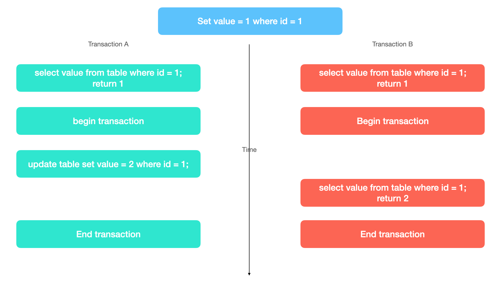
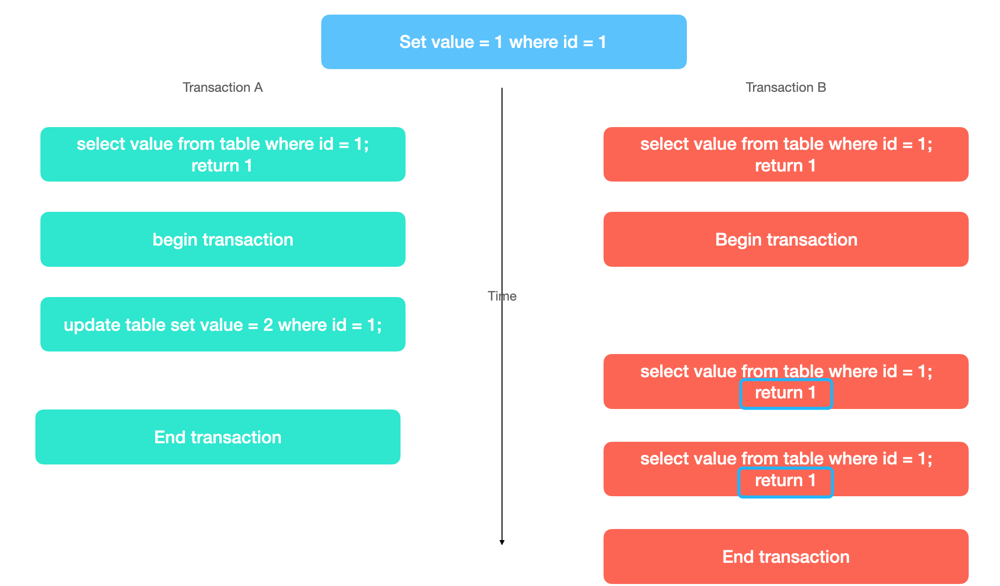

MVCC
MVCC究竟是什么
MVCC(全称Multi Version Concurrency Control)，多版本并发控制，多版本：表示了MVCC的实现原理，并发控制：表示MVCC的主要作用就是处理并发的一种机制
简介
MVCC是MySQL数据库的innodb引擎为了控制并发事务过程中，不会相互影响而出现的，为MySQL提供了不同的隔离级别(MySQL隔离级别)；同时，MVCC的存在也让MySQL的数据一致性得到了保证。
MVCC的机制有点类似git，git仓库中会存在很多分支，当从master分支fork出一条新的分支branckA进行开发时，branchA上只能看到fork前master分支最新的commit，但是对于另一条从同一commit fork出来的分支branchB来说，branchA的所有commit，它都是不可见的；相似的，在数据库的可重复读的隔离级别中，可以将数据库中的两个并发事务看做是两个分支，从事务开始的时候，两者看到的数据都是一样的，但是任何一个事务的提交，对于另一个事务是不可见的，也就是说，另一个事务永远读到的数据都是最开始事务开始时的数据。
具体内容
不同的隔离级别，数据的展示方式是不一样的
读未提交
对于读未提交来说，value的初始值是1，两个事务开始之后，事务A修改了value为2，这是事务B读取到的value就是2，也就是说事务A中未提交的修改也会影响到事务B

读已提交
读已提交，也叫不可重复读，在事务A提交之前的数据事务B是不可以看到的；但是之后的数据事务B是可以看到的，这就造成了事务的不可重复读

可重复度
可重复读即事务A提交之后的数据事务B也是看不到的
原理
对于任意数据库表元素来说，除了我们定义的字段之外，数据库本身还会提供隐藏的三个字段，分别为DB_TRX_ID，DB_ROLL_PT，ROW_ID；其中前两个字段都是为MVCC服务的，而ROW_ID则是当你没有设置主键的情况下系统为你自动分配的主键字段。
数据库对数据进行更新删除操作时，其实并没有真正的将数据进行删除或者更新，对于删除操作来讲，其实是先复制了一份新的数据，然后将DB_TRX_ID字段设置为当前事务ID，之后将老的数据标记为删除；对于更新操作也是如此；但是这些数据也不会一直保留，通常会隔一段时间对数据做一次整理，删除冗余的数据，因为这些数据本身也没什么用处了。
read view
每一个事物开始的时候，数据库都会创建一个read view列表，这个列表记录了当前活跃的事务id，在事务读取数据的时候，会将记录中的DB_TRX_ID和read view中的事务id做比较，当DB_TX_ID小于read view表中最小事务ID(up_limit_id)时，是可见的，当DB_TX_ID大于read view表中最大事务ID(low_limit_id)时，是不可见的；如果在read view表中，就是不可见的；当前事务是不会在read view表中的；
read view如何实现不可重复读和可重复度的隔离的？
- 不可重复读
不可重复读是在当前事务每次select时都会创建read view表，所以实现了不可重复读
- 可重复读
可重复读则只会在事务开始时创建read view表
Undo log / Redo log / Check point
Undo log
undo log的主要作用是回滚事务，如果事务失败，将事务的影响消除
Redo log
Redo log主要作用是数据的主从复制，或者数据恢复；redo log不是逻辑日志，而是数据页的变化日志，所以在数据恢复的时候会先通过获取一个数据快照，然后根据该数据快照之后的redo log进行数据恢复。
Check point
check point的作用是，数据恢复时的快照，因为如果按照redo log从头开始恢复就太慢了，而且日志文件也不会小，所一需要不时的创建快照记录，然后恢复数据的时候是从数据快照开始恢复的。